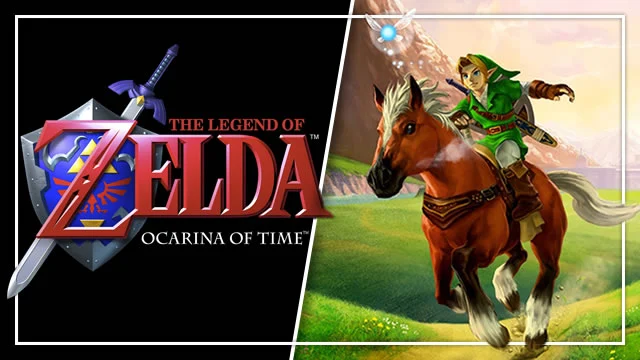

Game Review
Super Mario 64
Metroid Game
Pokemon Game
See our other games we have available for you
The Legend of Zelda: Ocarina of Time is an action-adventure game made in 1998 for the Nintendo 64 where the player will play as the protagonist of the Zelda series “Link”, or they can name their character whatever they want. Players will explore the land of Hyrule where they will meet a very wide cast of characters, different races and cultures, and spectacular landscapes. The player will need Courage and Wisdom to fight monsters, solve puzzles, and find hidden secrets. Here is a “Link” to the player's guide:
Ratings:
IGN - 10/10 99% - Metacritic 10/10 - GameSpot
Click here for a full description of the game from IGN: [Link]
Personal Review:
The Legend of Zelda: Ocarina of Time is one of my all-time favorite video games, as well as one of the few impactful games for me, and it has been for many years. I grew up with a Nintendo 64 and I played this game all the time as a kid. I do not mean the game is perfect, but I would recommend it to anyone. I think the game is a great tutorial for all action adventure games, learning how to solve puzzles and figuring out combat on all kinds of foes. Without the amount of text in the game, it can also help younger kids learn how to read. It is a classic, and it is very fun, what more can I say?
For Parents:
The game is rated “E for Everyone”, and I would say that is very true. The game features combat, which consists of hitting monsters with swords or other various weapons. There is no gore or blood however. Some foes require strategy and different items to defeat them. There are a few monsters in the game (mid to late game) that children might find “scary” or “frightening”. I myself could not get past them until I was 10 or so. A character in the game, “The Great Fairy”, is a character who gives Link magic abilities. Her portrayal is somewhat suggestive, and she wears clothes made from leaves. Meetings with her are very brief, and with 1998 3D graphics, this character simply made the portrayal of a “great fairy”. Parents, I would never recommend a game to kids that I thought portrayed inappropriate themes for young ages. I believe this game portrays themes of friendship, exploration, and finding courage within yourself to save others.